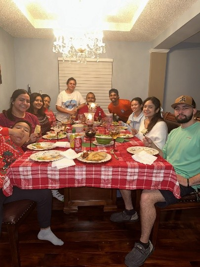
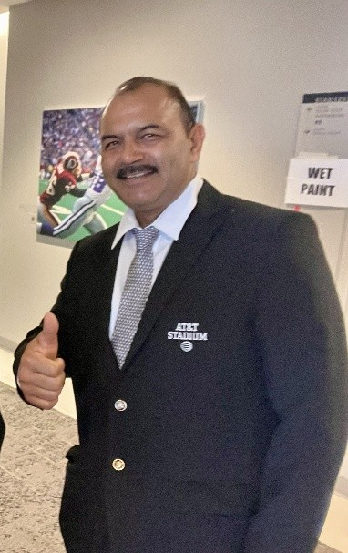
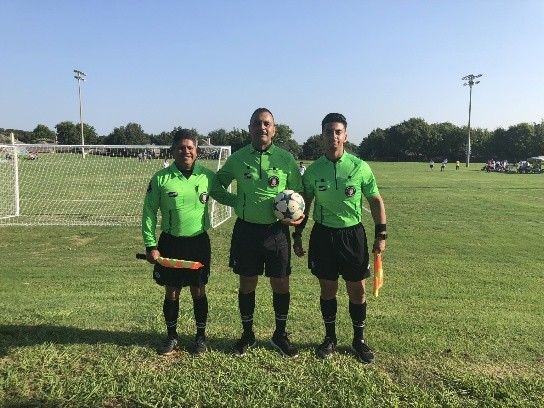
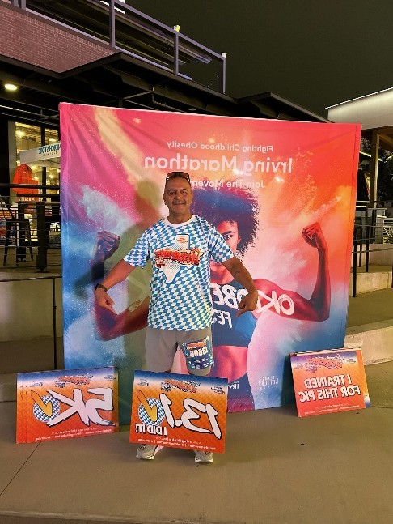
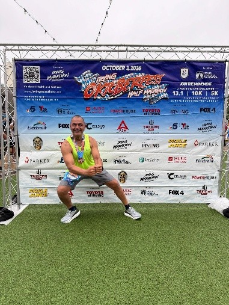

Family
Family is an important part of Juan's life. He takes pride in his children and enjoys spending time with the people closest to him.
Juan Emigdio Cardenas
Meet Juan Emigdio Cardenas, a father of five who enjoys staying active, spending time with family, and taking on new challenges.
Explore His Story
Juan is a proactive, organized, and outgoing individual who enjoys keeping busy and making the most of his time. Whether he is running, officiating soccer games, or spending time with family and friends, he continues to embrace new experiences.
His story is one of dedication, family, and the willingness to keep moving forward. Learn more about his background, experiences, and personal journey on the About page.

Family is an important part of Juan's life. He takes pride in his children and enjoys spending time with the people closest to him.

Soccer has been part of Juan's life for many years. Officiating allows him to stay connected to a sport he has always enjoyed.

Running has become one of Juan's favorite challenges and continues to motivate him to set new goals.
Juan is working toward completing his first Los Angeles Marathon. This goal represents another opportunity to challenge himself and continue pursuing personal growth.
Learn more about the event by visiting the official Los Angeles Marathon website.
Los Angeles Marathon Website